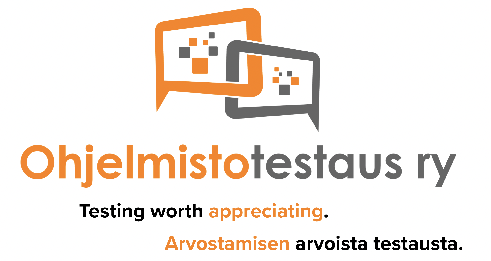

Ohjelmistotestaus ry (Software Testing Finland) kehittää ohjelmisto- ja järjestelmätestauksen tilaa tilannetekijäohjatun (context-driven) testauksen periaattein sekä toimii ohjelmistotestausosaamisen kehittämisestä kiinnostuneiden yhteistyöverkostona. Yhdistys perustettiin 14.4.2014.
Löydät meidät twitteristä @testausyhdistys